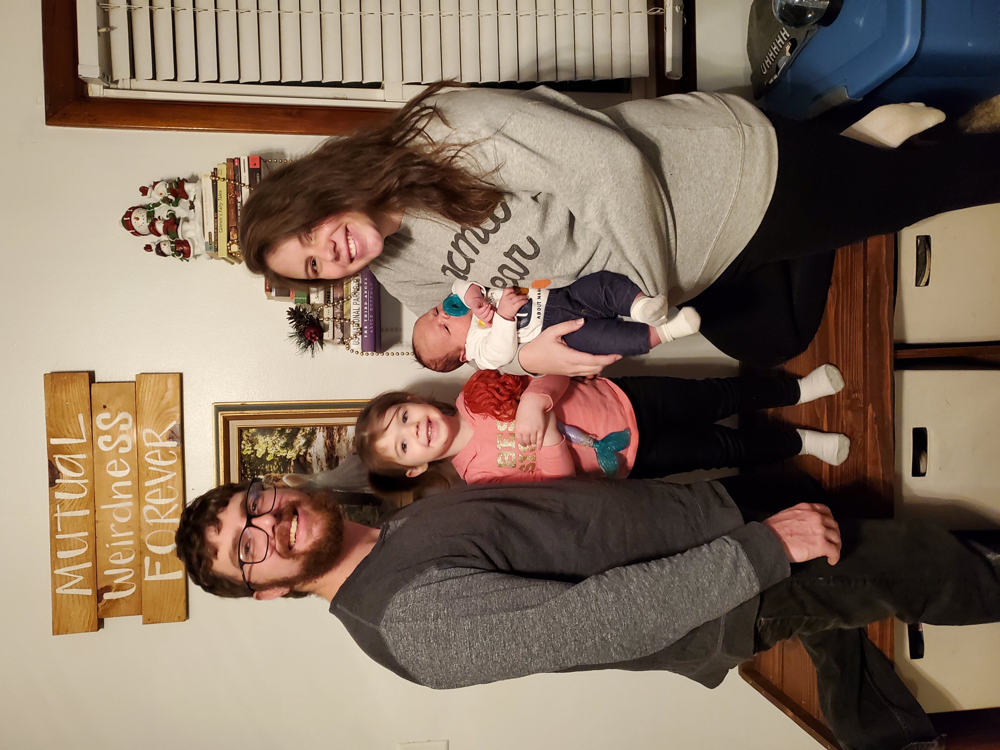

Biography
Born in 1990, I was raised in the outskirts of Elyria, Ohio. I graduated high school and seeked furthering my education at Heidelberg University where I graduated with a Bachelor's degree in Health and Physical Education. I spent time playing baseball and playing video games in high school. I stopped playing baseball when I entered college to focus on my education but did not drop the video game habit. I met my future wife at Heidelberg.
I am a family oriented man who works hard to provide a safe and healthy environment for my wife and children. I currently have two children, Ember and Renick, and a wife, Sarah. I was married in 2016 and we had our first child in 2018 and the second in 2021.
I have worked in many different types of jobs including a preschool teacher, a driver, a maintenance worker, and a cook. I currently work as a Fedex Ground driver. I am switching jobs to the tech industry to find something that I will truly enjoy doing as a career.
My earliest memory of working with code was when I was still in high school when I worked on an army style text game in mIRC chat. Unfortunately I no longer have that code when that computer quit working. Recently, I have worked with development code for the game DayZ on Playstation to create different loot tables and create new ‘villages’ within the game. I am currently taking a coding bootcamp through Case Western Reserve University to help hone the craft and pursue a career in coding!
